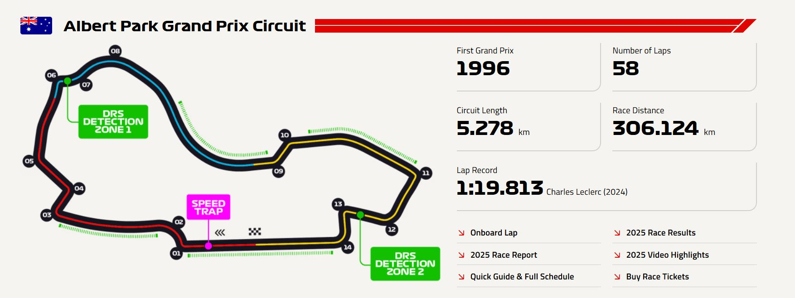

| Özellik | Değer |
|---|---|
| Pist uzunluğu | 5.278 km (3.281 mil) |
| Tur sayısı | 58 tur |
| Toplam yarış mesafesi | 306.124 km (190.394 mil) |
| Viraj sayısı | 14 (6 sol, 8 sağ) |
| DRS bölgeleri | 4 DRS bölgesi (F1 2024 itibarıyla) |
| En hızlı tur | 1:20.235 – Charles Leclerc (2022) Ferrari |
| En yüksek hız | Yaklaşık 330+ km/s (DRS açıkken) |
| Ortalama hız | ~240 km/s |